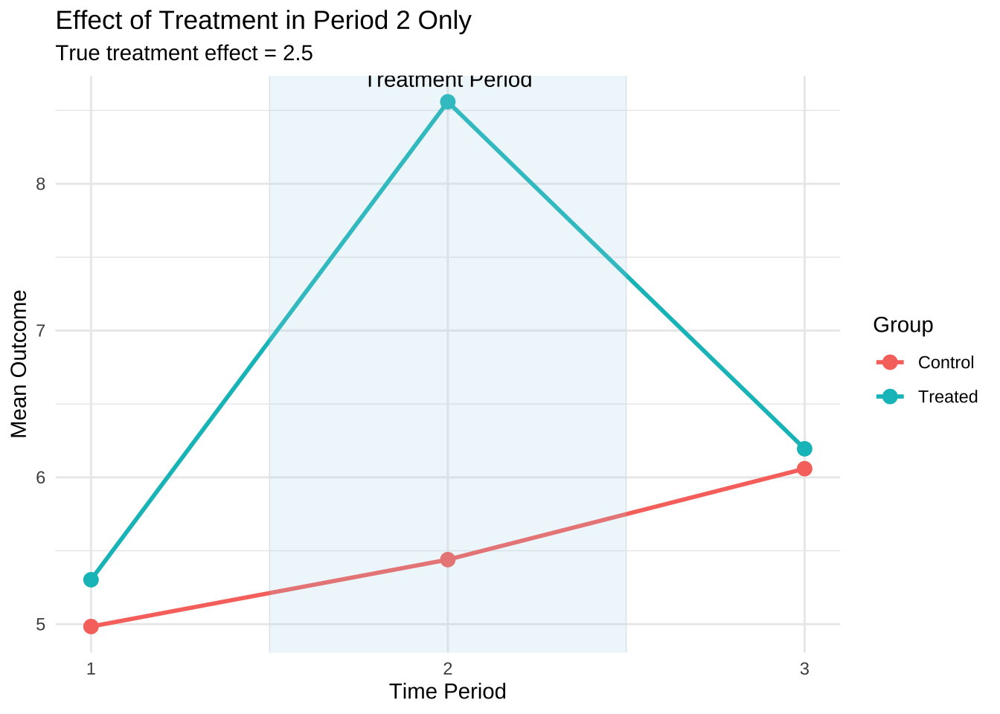
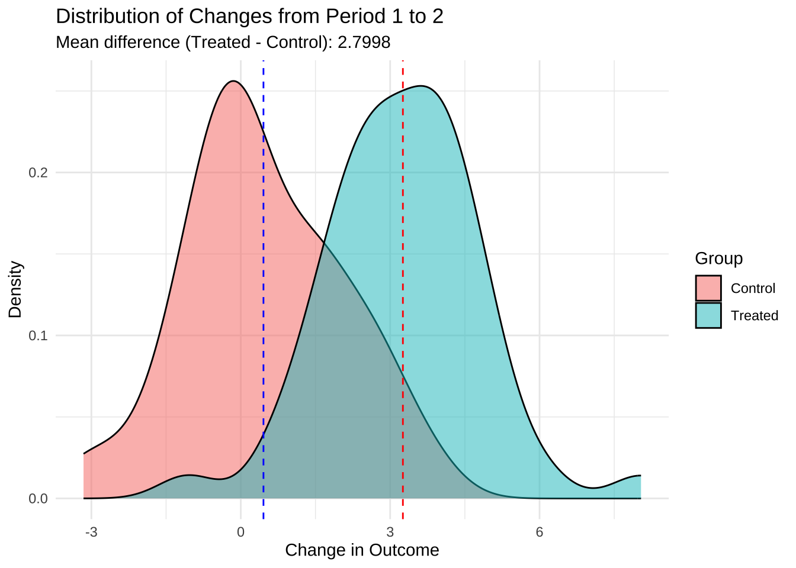
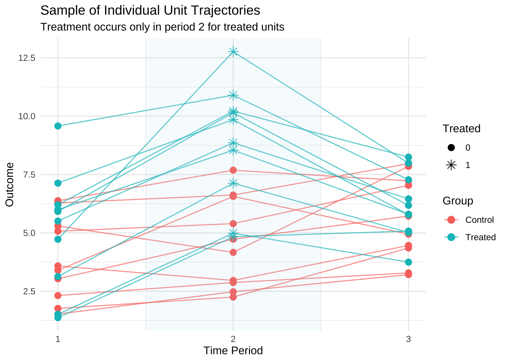
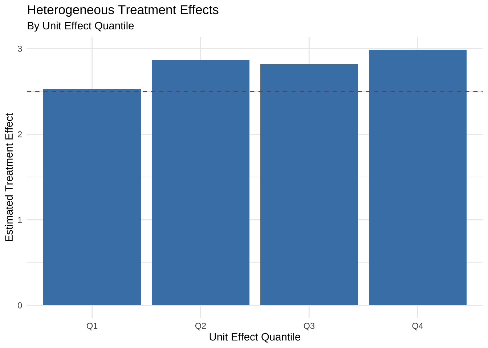

Here we show that the empirical covariance can be expressed as a difference equation.
For (the difference) and (the mean)
Given sequences and , we have
Strategy
The empirical covariance can be written as follows:
so the proof strategy is to show that the difference equation can be reduced to the same form.
Proof
Since we can expand the difference equation as:
and we’ll evaluate each of the 4 terms in turn.
term 1:
Making a change of variable: and noting that when ranges from to , ranges from to , we have:
where in the second-last line we note that doesn’t depend on so we count each exactly times for . Note that this is
term 2:
The second term is
and it can be decomposed directly to:
So combining the first and second terms we get , and we’re on our way towards showing that
term 3:
The third term is and again we will use the change of variables .
Before changing variables, the outer sum goes from to and the inner sum goes from to . The indices used in are shown in figure (A) below (for ), along with the values.
With the change of variable, the outer sum goes from to and the inner sum goes from to . The indices used to sum are shown in figure (B) below (for ).
The first index () is along the horizontal axis, while the second index () is along the vertical axis.
Note that the inner sum on gives pairs, so that the total number of pairs is
or half of all index pairs less the diagonal . From figure (B) we see that it sums the lower diagonal of all index pair values, less the diagonal.
This sum also counts the number of unique pairs where and which is equivalent to counting the number of pairs where
term 4:
The fourth term is and again we will use the change of variables .
With the change of variable, and with now the second index, the inner sum goes from to and the outer sum goes from to . The indices used to sum are shown in figure (B) below (for ).
In fact the terms are the transpose of the terms of figure (B) as can be seen in figure (C).
So per terms 3 & 4, each cross-product () appears exactly once with a negative sign, for a total of terms (since each of terms 3 & 4 has terms.
So we are missing a set of diagonal terms from the total terms.
but the sum of the first two terms is , which provides the missing diagonal, so we have:
compute:
Code
set.seed(8740); T =20a <-1+rnorm(n = T)b <- a +4+rnorm(n = T, sd =2)# calculate using difference equationcov_diff <-1:(T-1) |> purrr::map_vec( (\(k){ ((dplyr::lead(a,k) - a) * (dplyr::lead(b,k) - b)) |>sum(na.rm=TRUE) }) ) |>sum(na.rm=TRUE) / (T*T)# summarize resultstibble::tibble(x = a, y = b) |> dplyr::mutate(x = x -mean(x), y = y -mean(y), prod = x*y) |> dplyr::summarize(pop_cov =mean(prod), smpl_cov =sum(prod)/(dplyr::n()-1) ) |> tibble::add_column(calc_cov =cov(a,b) # built in covariance , cov_diff = cov_diff ) |> gt::gt() |> gt::tab_header(title ="Covariances", subtitle = stringr::str_glue("T={T}")) |> gtExtras::gt_theme_espn()
Covariances
T=20
pop_cov
smpl_cov
calc_cov
cov_diff
0.9179426
0.9662554
0.9662554
0.9179426
And the same expression hold for variance calculations: the population variance, calculated as the mean of the square of centered values, can also be calculated using all the differences between values.
From FWL we know we can write our regression coefficient of interest as the ratio of a covariance over a variance, and so we can also express our coefficient in terms of differences.
Code
# TWFE Example with 40 samples# Setting seed for reproducibilityset.seed(123)# Parametersn_units <-280# Number of units/entitiesn_periods <-2# Number of time periodstotal_samples <- n_units * n_periods # Total observations (40)# Unit and time fixed effectsunit_effects <-rnorm(n_units, mean =5, sd =2) # Unit-specific effectstime_effects <-rnorm(n_periods, mean =0, sd =1) # Time-specific effectsepsilon <-rnorm(total_samples, mean =0, sd =1) # Error term# True treatment effecttrue_effect <-2.5df <- tibble::tibble(unit =rep(1:n_units, each = n_periods) , time =rep(1:n_periods, times = n_units) , treatment = dplyr::case_when((unit >= n_units/2) & (time ==2) ~1, TRUE~0) , y = unit_effects[unit] +# Unit fixed effects time_effects[time] +# Time fixed effects true_effect * treatment +# Treatment effect epsilon , unit_effect = unit_effects[unit] , time_effect = time_effects[time])# panel data estimatorstwfe_model <- plm::plm(y ~ treatment, data = df |>as.data.frame(), index =c("unit", "time"), model ="within", effect ="twoways")# linear modeltwfe_lm_model <-lm(y ~1+ time + treatment, data = df)# lm(y ~ 1 + factor(unit) + factor(time) + factor(treatment), data = df)# plm::plm(y ~ + treatment, data = df, index = c("unit", "time"), model = "random", effect = "twoways")# Display model resultsg <- twfe_model |> broom::tidy() |> dplyr::mutate(model ='twfe_plm_model', .before =1) |> dplyr::bind_rows( twfe_lm_model |> broom::tidy() |> dplyr::mutate(model ='twfe_lm_model', .before =1) ) |> dplyr::group_by(model) |> gt::gt("term") |> gt::fmt_number(columns =-c(model,term), decimals =3) |> gt::tab_header(title ="TWFE Estimates", subtitle ="using lm and plm") |> gtExtras::gt_theme_espn()df_plot_data <- df |> dplyr::group_by(unit) |> dplyr::group_map(.f =~dplyr::mutate( .x, treated = dplyr::case_when(1%in% treatment ~"treated", TRUE~"control" ) ) , .keep =TRUE ) |> dplyr::bind_rows() |> dplyr::group_by(time, treated) |> dplyr::summarize(mean_y =mean(y))# p1 <- df_plot_data |> # ggplot(aes(x = time, y = mean_y, group = treated, color = treated)) +# geom_line(linewidth = 1) +# geom_point(size = 3) +# labs(title = "Difference-in-Differences Visual",# subtitle = paste("True treatment effect =", true_effect),# x = "Time Period", y = "Mean Outcome", color = "Group") +# scale_x_continuous(breaks = c(1, 2)) +# theme_minimal() +# theme(legend.position = "none")# Plot group means over time# p1 <- ggplot(plot_data, aes(x = time, y = mean_y, group = group, color = group)) +# geom_line(linewidth = 1) +# geom_point(size = 3) +# labs(title = "Difference-in-Differences Visual",# subtitle = paste("True treatment effect =", true_effect),# x = "Time Period", y = "Mean Outcome", color = "Group") +# scale_x_continuous(breaks = c(1, 2)) +# theme_minimal()# # Plot individual unit trajectories# p2 <- df |> dplyr::group_by(unit) |> # dplyr::group_map(# .f = ~dplyr::mutate(.x, treated = dplyr::case_when(1 %in% treatment ~ "treated", TRUE ~ "control" ))# , .keep = TRUE# ) |> # dplyr::bind_rows() |> # rsample::group_initial_split(group=unit, prop = 0.2, strata = treated) |> # rsample::training() |> # ggplot(aes(x = time, y = y, group = unit, # color = treated)) + # factor(ifelse(unit <= T/2, "Control", "Treated"))# geom_line(alpha = 0.3, ) +# geom_point() +# # plot_data, aes(x = time, y = mean_y, group = group, color = group)) +# labs(title = "Individual Unit Trajectories",# x = "Time Period", y = "Outcome", color = "Group") +# scale_x_continuous(breaks = c(1, 2)) +# #theme_set(theme_bw(base_size = 12) + theme(legend.position = "top"))# theme_minimal()p3 <- df |> dplyr::group_by(unit) |> dplyr::group_map(.f =~dplyr::mutate(.x, treated = dplyr::case_when(1%in% treatment ~"treated", TRUE~"control" )) , .keep =TRUE ) |> dplyr::bind_rows() |> rsample::group_initial_split(group=unit, prop =0.2, strata = treated) |> rsample::training() |>ggplot(aes(x = time, y = y, group = unit, color = treated)) +geom_line(alpha =0.8, linetype=3 ) +geom_point(alpha =0.8, shape =15) +geom_line(data=df_plot_data, aes(x = time, y = mean_y, group = treated, color = treated), linewidth =1 ) +labs(x ="Time Period", y ="Outcome", color ="Group") +scale_x_continuous(breaks =c(1, 2)) +theme_minimal() +theme(legend.title =element_blank()) p3 +wrap_table(g, panel="full", space ="free_y") +plot_annotation(title ='Individual Unit Trajectories (dotted), Mean Values (solid), and Model Estimates',subtitle = stringr::str_glue("True treatment effect = {true_effect} | {n_units} units | {n_periods} periods"))
Code
# Calculate means by group and timegroup_means <- stats::aggregate(y ~ treatment + time, data = df, FUN = mean) |> dplyr::mutate(group = dplyr::case_when(treatment ==1~"Treated", TRUE~"Control"))group_means |> tidyr::pivot_wider(names_from = group, values_from = y) |> tibble::add_row(treatment =1, time =1, .before =3) |> dplyr::mutate(Treated = dplyr::case_when(dplyr::row_number() ==3~mean(df$y[df$unit %in%11:20& df$time ==1]), TRUE~ Treated) , Treated = dplyr::lead(Treated,2)) |> dplyr::reframe(dplyr::across(.cols=Control:Treated, .fns =~dplyr::lead(.x)-.x)) |> tidyr::drop_na() |> dplyr::mutate(diff = Treated - Control) |> gt::gt() |> gt::fmt_number(decimals =3) |> gt::tab_header(title ="Manually calculated difference-in-differences") |> gt::cols_label(Control ="control mean diffs",Treated ="treated mean diffs",diff ="Treated - Control" ) |> gtExtras::gt_theme_espn()
Manually calculated difference-in-differences
control mean diffs
treated mean diffs
Treated - Control
2.266
4.537
2.271
Estimated by differences
term
estimate
std.error
statistic
p.value
(Intercept)
2.131
0.123
17.298
0.000
treatment_diff
2.743
0.174
15.798
0.000
# TWFE Example with 40 samples, 3 time periods, treatment in period 2 only# Setting seed for reproducibility# TWFE Example with 100 units, 3 time periods, treatment in period 2 only# Setting seed for reproducibilityset.seed(123)# Parametersn_units <-100# Number of units/entitiesn_periods <-3# Number of time periodstotal_samples <- n_units * n_periods # Total observations (300)# Create balanced panel datacreate_twfe_data <-function() {# Create unit and time indices unit_id <-rep(1:n_units, each = n_periods) time_id <-rep(1:n_periods, times = n_units)# Unit and time fixed effects unit_effects <-rnorm(n_units, mean =5, sd =2) # Unit-specific effects time_effects <-c(0, 0.5, 1) # Time trend# Assign treatment (only in period 2)# Half of the units are treated, but only in period 2 treated_units <-51:100# Units 51-100 get treated in period 2 only treatment <-sapply(1:length(unit_id), function(i) { unit_id[i] %in% treated_units && time_id[i] ==2 }) *1# True treatment effect true_effect <-2.5# Generate outcome with unit fixed effects, time fixed effects, and treatment effect epsilon <-rnorm(total_samples, mean =0, sd =1) # Error term y <- unit_effects[unit_id] +# Unit fixed effects time_effects[time_id] +# Time fixed effects true_effect * treatment +# Treatment effect epsilon # Error term# Create dataframe df <-data.frame(unit = unit_id,time = time_id,treatment = treatment,y = y,unit_effect = unit_effects[unit_id],time_effect = time_effects[time_id] )# Add treatment group indicator df$group <-ifelse(df$unit %in% treated_units, "Treated", "Control")return(list(df = df, true_effect = true_effect))}# Generate the data and storetwfe_data <-create_twfe_data()df <- twfe_data$dftrue_effect <- twfe_data$true_effect# Basic data summaryprint(paste("Total observations:", nrow(df)))
[1] "Total observations: 300"
print(paste("Number of units:", length(unique(df$unit))))
[1] "Number of units: 100"
print(paste("Number of time periods:", length(unique(df$time))))
# Calculate group means by treatment status and timegroup_means <-aggregate(y ~ group + time, data = df, FUN = mean)print("Group means by group and time period:")
[1] "Group means by group and time period:"
print(group_means)
group time y
1 Control 1 4.983993
2 Treated 1 5.302649
3 Control 2 5.439735
4 Treated 2 8.558159
5 Control 3 6.059079
6 Treated 3 6.194647
# Calculate treatment effect using a regressionlibrary(plm)twfe_model <-plm(y ~ treatment, data = df, index =c("unit", "time"), model ="within", effect ="twoways")# Display model resultsprint("TWFE Model Results:")
Twoways effects Within Model
Call:
plm(formula = y ~ treatment, data = df, effect = "twoways", model = "within",
index = c("unit", "time"))
Balanced Panel: n = 100, T = 3, N = 300
Residuals:
Min. 1st Qu. Median 3rd Qu. Max.
-2.337710 -0.536378 -0.036149 0.540570 2.411136
Coefficients:
Estimate Std. Error t-value Pr(>|t|)
treatment 2.89131 0.25286 11.434 < 2.2e-16 ***
---
Signif. codes: 0 '***' 0.001 '**' 0.01 '*' 0.05 '.' 0.1 ' ' 1
Total Sum of Squares: 349.25
Residual Sum of Squares: 209.93
R-Squared: 0.39893
Adj. R-Squared: 0.087716
F-statistic: 130.749 on 1 and 197 DF, p-value: < 2.22e-16
# Calculate manual DiD estimate for period 2get_did_estimate <-function(df) {# Pre-period difference (time=1) pre_diff <-mean(df$y[df$group =="Treated"& df$time ==1]) -mean(df$y[df$group =="Control"& df$time ==1])# Treatment period difference (time=2) treat_diff <-mean(df$y[df$group =="Treated"& df$time ==2]) -mean(df$y[df$group =="Control"& df$time ==2])# DiD estimate did_est <- treat_diff - pre_diffreturn(did_est)}manual_did <-get_did_estimate(df)print(paste("Manual DiD estimate:", round(manual_did, 4)))
[1] "Manual DiD estimate: 2.7998"
# Calculate event study estimatesevent_study_model <-lm(y ~factor(unit) +factor(time) + group:factor(time), data = df)# Extract coefficients for group:time interactionses_coefs <-coef(event_study_model)[grepl("group.*:factor\\(time\\)", names(coef(event_study_model)))]print("Event study coefficients (relative to period 1):")
[1] "Event study coefficients (relative to period 1):"
print(es_coefs)
named numeric(0)
# Visualize the datalibrary(ggplot2)# Plot group means over timeggplot(group_means, aes(x = time, y = y, group = group, color = group)) +geom_line(size =1) +geom_point(size =3) +annotate("rect", xmin =1.5, xmax =2.5, ymin =-Inf, ymax =Inf, alpha =0.2, fill ="lightblue") +annotate("text", x =2, y =max(group_means$y), label ="Treatment Period", vjust =-1) +labs(title ="Effect of Treatment in Period 2 Only",subtitle =paste("True treatment effect =", true_effect),x ="Time Period", y ="Mean Outcome", color ="Group") +scale_x_continuous(breaks =1:3) +theme_minimal()
Warning: Using `size` aesthetic for lines was deprecated in ggplot2 3.4.0.
ℹ Please use `linewidth` instead.

# Calculate and plot the distribution of treatment effectsdf_period2 <- df[df$time ==2,]df_period1 <- df[df$time ==1,]# Merge period 1 data to period 2df_period2$y_pre <- df_period1$y[match(df_period2$unit, df_period1$unit)]df_period2$y_diff <- df_period2$y - df_period2$y_pre# Plot distribution of changes by groupggplot(df_period2, aes(x = y_diff, fill = group)) +geom_density(alpha =0.5) +geom_vline(xintercept =mean(df_period2$y_diff[df_period2$group =="Treated"]), color ="red", linetype ="dashed") +geom_vline(xintercept =mean(df_period2$y_diff[df_period2$group =="Control"]), color ="blue", linetype ="dashed") +labs(title ="Distribution of Changes from Period 1 to 2",subtitle =paste("Mean difference (Treated - Control):", round(mean(df_period2$y_diff[df_period2$group =="Treated"]) -mean(df_period2$y_diff[df_period2$group =="Control"]), 4)),x ="Change in Outcome", y ="Density", fill ="Group") +theme_minimal()

# Plot a subset of individual trajectories (20 units for clarity)sampled_units <-c(sample(1:50, 10), sample(51:100, 10))df_subset <- df[df$unit %in% sampled_units,]ggplot(df_subset, aes(x = time, y = y, group = unit, color = group)) +geom_line(alpha =0.7) +geom_point(aes(shape =factor(treatment)), size =3) +scale_shape_manual(values =c(16, 8), name ="Treated") +annotate("rect", xmin =1.5, xmax =2.5, ymin =-Inf, ymax =Inf, alpha =0.1, fill ="lightblue") +labs(title ="Sample of Individual Unit Trajectories",subtitle ="Treatment occurs only in period 2 for treated units",x ="Time Period", y ="Outcome", color ="Group") +scale_x_continuous(breaks =1:3) +theme_minimal()

# Perform placebo test comparing period 1 to period 3 changes (no treatment in either)df_period3 <- df[df$time ==3,]df_period1$y_post <- df_period3$y[match(df_period1$unit, df_period3$unit)]df_period1$y_diff <- df_period1$y_post - df_period1$yplacebo_diff <-mean(df_period1$y_diff[df_period1$group =="Treated"]) -mean(df_period1$y_diff[df_period1$group =="Control"])print(paste("Placebo test (period 1 to 3 difference):", round(placebo_diff, 4)))
[1] "Placebo test (period 1 to 3 difference): -0.1831"
# Test for heterogeneous treatment effectsdf_treated_p2 <- df[df$treatment ==1,]df_treated_p2$unit_effect_quantile <-cut(df_treated_p2$unit_effect, breaks =quantile(df_treated_p2$unit_effect, probs =seq(0, 1, 0.25)),labels =c("Q1", "Q2", "Q3", "Q4"), include.lowest =TRUE)# Calculate treatment effect by unit effect quantiledf_treated_p1 <- df[df$group =="Treated"& df$time ==1,]df_treated_p1$unit_effect_quantile <-cut(df_treated_p1$unit_effect, breaks =quantile(df_treated_p1$unit_effect, probs =seq(0, 1, 0.25)),labels =c("Q1", "Q2", "Q3", "Q4"), include.lowest =TRUE)df_treated_p2$y_pre <- df_treated_p1$y[match(df_treated_p2$unit, df_treated_p1$unit)]df_treated_p2$effect_estimate <- df_treated_p2$y - df_treated_p2$y_pre# Get control trendcontrol_trend <-mean(df$y[df$group =="Control"& df$time ==2]) -mean(df$y[df$group =="Control"& df$time ==1])df_treated_p2$effect_adjusted <- df_treated_p2$effect_estimate - control_trendhet_effects <-aggregate(effect_adjusted ~ unit_effect_quantile, data = df_treated_p2, FUN = mean)print("Heterogeneous treatment effects by unit effect quantile:")
[1] "Heterogeneous treatment effects by unit effect quantile:"
# Plot heterogeneous effectsggplot(het_effects, aes(x = unit_effect_quantile, y = effect_adjusted)) +geom_bar(stat ="identity", fill ="steelblue") +geom_hline(yintercept = true_effect, linetype ="dashed", color ="red") +labs(title ="Heterogeneous Treatment Effects",subtitle ="By Unit Effect Quantile",x ="Unit Effect Quantile", y ="Estimated Treatment Effect") +theme_minimal()

# Check power of the testpower_analysis <-function(df, n_simulations =1000) {# Extract model parameters sigma <-sd(residuals(twfe_model)) effect_sizes <-seq(0, 5, 0.5)# Store power results power_results <-data.frame(effect_size = effect_sizes,power =NA )for (i in1:length(effect_sizes)) {# Track significant results significant_results <-0for (j in1:n_simulations) {# Create simulated data with this effect size df_sim <- df df_sim$y <- df_sim$unit_effect + df_sim$time_effect + effect_sizes[i] * df_sim$treatment +rnorm(nrow(df_sim), mean =0, sd = sigma)# Run the model model_sim <-plm(y ~ treatment, data = df_sim, index =c("unit", "time"), model ="within", effect ="twoways")# Check if result is significant at 5% level p_value <-summary(model_sim)$coefficients[1, "Pr(>|t|)"]if (p_value <0.05) { significant_results <- significant_results +1 } }# Calculate power power_results$power[i] <- significant_results / n_simulations }return(power_results)}# Run a smaller number of simulations for demonstrationpower_results <-power_analysis(df, n_simulations =100)print("Power analysis results:")